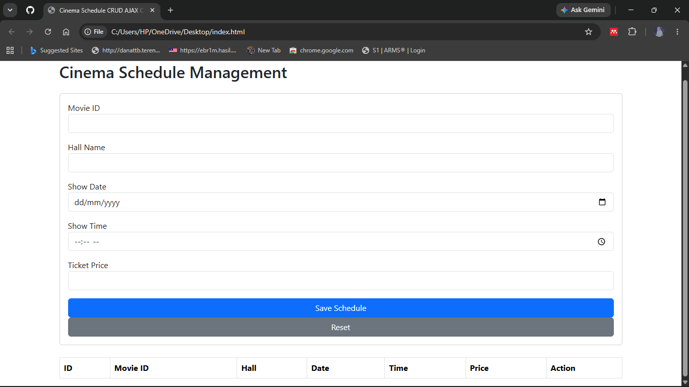
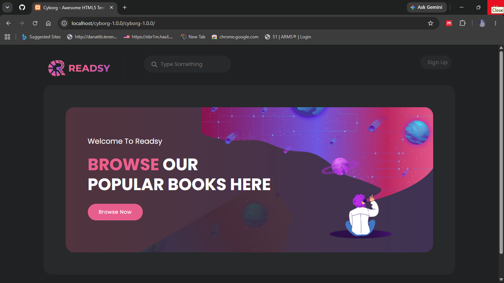

A collection of projects and learning experiences throughout my Computer Science journey.

One of the projects I developed during my studies was a Cinema Schedule Management System, which focuses on managing movie schedules through a RESTful API architecture.
The objective of this project was to provide a centralized system that allows users to manage cinema schedules efficiently. The system supports essential CRUD operations (Create, Read, Update, and Delete), enabling administrators to add new movie schedules, update existing information, retrieve schedule details, and remove outdated records.
The project was developed using CodeIgniter 4 and MySQL. RESTful API endpoints were created to allow communication between the backend database and client applications.
Through this project, I gained practical experience in:
This project strengthened my understanding of modern web service architecture and demonstrated how APIs can be used to exchange data efficiently between systems.

My Final Year Project (FYP) focuses on developing a Personal Reading Tracker using a Machine Learning Recommendation System.
The main purpose of this project is to help users manage their reading activities while receiving personalized book recommendations based on their preferences and reading history.
Many readers face difficulties discovering books that match their interests. Therefore, this project aims to solve that problem by utilizing recommendation techniques to suggest relevant books automatically.
The recommendation module incorporates machine learning approaches such as:
Besides recommendation features, the system also allows users to:
Throughout the development process, I learned many valuable skills including machine learning concepts, recommendation system design, database management, software development, and user-centered application design.
This project represents one of my most significant academic achievements because it combines software development and machine learning to create a practical solution that enhances users' reading experiences.
Both projects have contributed significantly to my growth as a Computer Science student. The Cinema Schedule Management System enhanced my backend development and API integration skills, while the Personal Reading Tracker broadened my understanding of machine learning and recommendation systems.
These experiences have strengthened my passion for software development and motivated me to continue learning emerging technologies in the field of computer science.